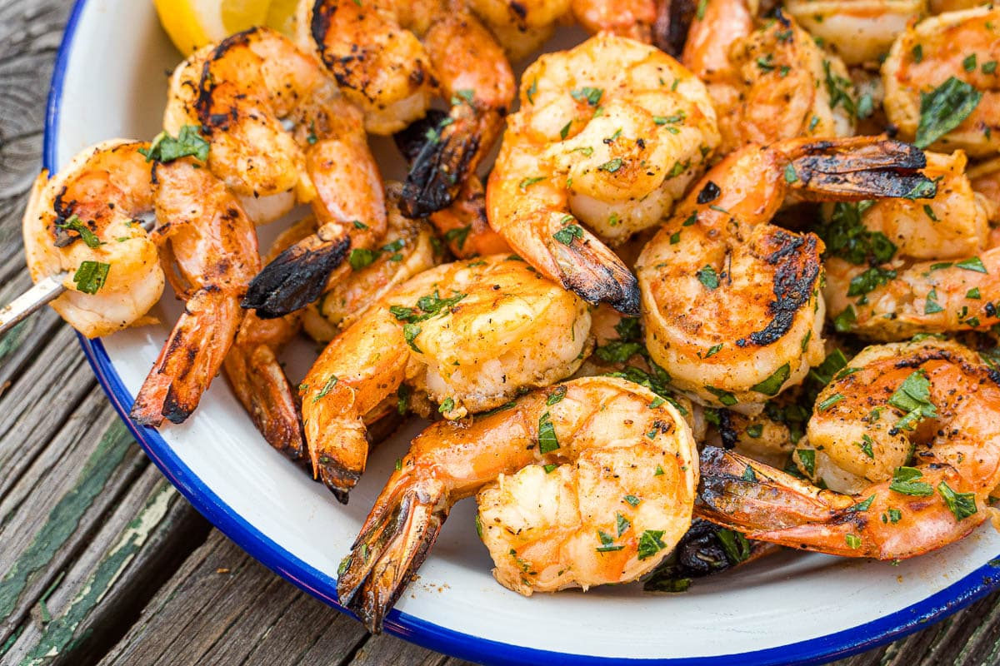

Spicy Grilled Shrimp
Description
This grilled shrimp recipe is fast and easy to prepare and destined to be the hit of any barbeque. And, weather not permitting, the shrimp cook up great under the broiler, too.
This grilled shrimp recipe is fast and easy to prepare and destined to be the hit of any barbeque. And, weather not permitting, the shrimp cook up great under the broiler, too.